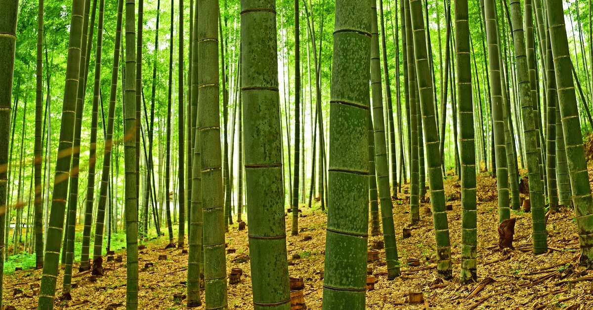

The Incredible Bamboo

Biology of Bamboo
Bamboos are among the most intriguing subfamilies in the plant kingdom.
Though the largest species can reach over 160 feet tall, they are all
members of the grass family Poaceae.

Even the largest clumping varieties have root balls less than 3ft deep and feeder roots only extending a few feet from the root ball. Running varieties tend to have an even shallower root structure. The growth pattern of bamboo is equally unique. From the 160ft tall Dendrocalamus Giganteus down to the 1ft Pleioblastus Akebono, every bamboo stalk reaches its maximum height within 90 days of emerging from the rhizome. This can result in the stalk growing up to 35 inches per day in the case of the giant timber bamboos. Bamboos reach their mature height by sending up successively taller stalks every year. This growth habit is necessary in part because of how rarely they produce seeds. Depending on the species, many only flower once every 60-120 years, and their seeds are only viable for a few months.


Bamboo Uses
Bamboos are also among the most versatile of plants.
-
Food
-
The shoots of many phyllostachys bamboos are edible, and the leaves of the Indocalamus Tessellatus (Giant Leaf Bamboo) have been used in Japan and China for wrapping food before steaming.


-
Animal Feed
The leaves of several bamboo species, like Phyllostachys Bissetii, have high enough crude protein levels to be considered "premium" fodder by the USDA.

-
Building Materials
With a tensile strength up to 8x that of the strongest woods, bamboos can make excellent building materials. They can be used for everything from trusses and rafters to walls and ceilings to scaffolding to flooring. Its popularity as a hardwood floor alternative is growing in the West in large part to it's greater sustainability and durability against high traffic.


-
Textiles
Bamboo can be turned into fabric using a mechanical-bacterial process similar to that which converts flax and hemp into linen, which allows the fiber to retain much of the strength and durability of the bamboo plant. The cellulose from the plant can also be converted to rayon, though without proper protection the chemicals this process requires can be dangerous to workers.

-
Landscaping and Land Management
The exotic appearance and unusual growth patterns make landscaping one of the most popular uses of bamboo in the US. Depending on the species, they can be used for privacy screens, wind breaks, erosion control, and ornamentals. Though they're often associated with the tropics, there are species available in the US that are very drought tolerant and hardy to as low as -5 degrees farenheit.


Choosing a Bamboo
When choosing a bamboo, the buyer must take into account the following
factors:
-
The minimum and maximum temperatures the plant can tolerate
-
Whether the plant can tolerate the humidity level of the desired location
-
How much water the plant needs
-
What kind of soil the plant needs
-
Whether the plant grows in clumps or requires containment
-
The plant's intended purpose
Bamboo is a comparatively expensive plant in the US due to it's relative rarity and resistance to mass propagation. A relatively small plant can often cost as much as a young tree, though unlike a tree, it can reach its mature height in 3-5 years.